缺失值处理
学习目标
- 知道什么是缺失值，为什么会产生缺失值
- 熟练掌握缺失值处理的方式
1. pandas 缺失值 NaN 简介
在实际进行数据处理的过程中，很多数据集都含缺失数据。
缺失数据有多重表现形式：
1）数据库中，缺失数据表示为NULL
2）在某些编程语言中用NA或None表示
3）缺失值也可能是空字符串''或数值 0
4）在 pandas 中使用 NaN 表示缺失值
pandas 中的 NaN 值来自 NumPy 库
NumPy 中缺失值有几种表示形式：NaN，NAN，nan，他们都一样
import numpy as np print(np.NaN) print(np.NAN) print(np.nan)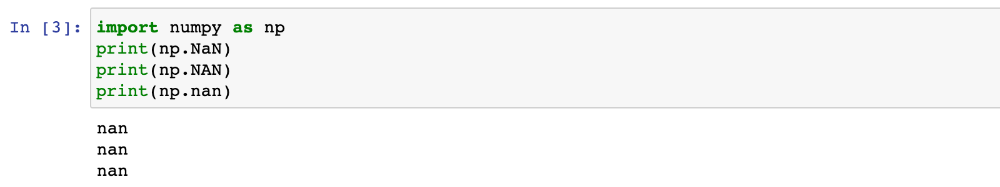
注意点1：缺失值和其它类型的数据不同，它毫无意义，NaN不等于0，也不等于空字符串
print(np.NaN==True)
print(np.NaN==False)
print(np.NaN==0)
print(np.NaN=='')
print(np.NaN==None)
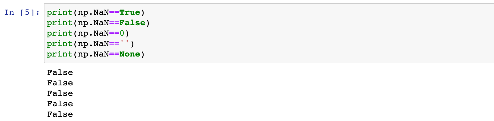
注意点2：两个NaN也不相等
print(np.NaN==np.NaN)
print(np.NaN==np.nan)
print(np.NaN==np.NAN)
print(np.NAN==np.nan)
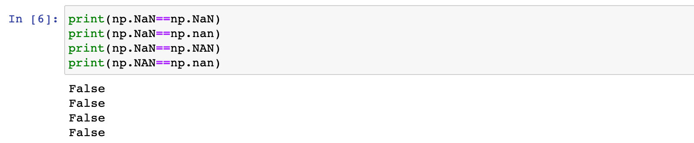
pandas 判断是否为缺失值方法：
| 方法 | 说明 |
|---|---|
pd.isnull(obj)或 pd.isna(obj) |
判断 obj 是否为缺失值 |
pd.notnull(obj)或 pd.notna(obj) |
判断 obj 不为缺失值 |
print(pd.isnull(np.NaN))
print(pd.isnull(np.nan))
print(pd.isnull(np.NAN))
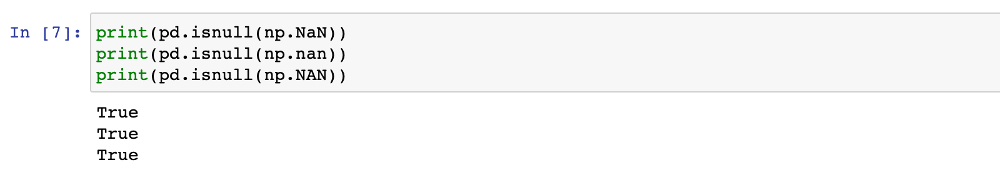
print(pd.notnull(np.NaN))
print(pd.notnull(42))
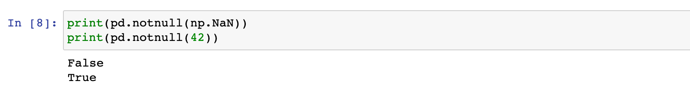
判断 Series 中的元素是否是缺失值：
| 方法 | 说明 |
|---|---|
series.isnull() |
判断 Series 中的每个元素是否为缺失值，返回一个 bool 序列的 Series 数据 |
# 创建一个包含缺失值的 Series 数据
series = pd.Series([1, 3, np.NaN, 2, np.NaN, 5])
series
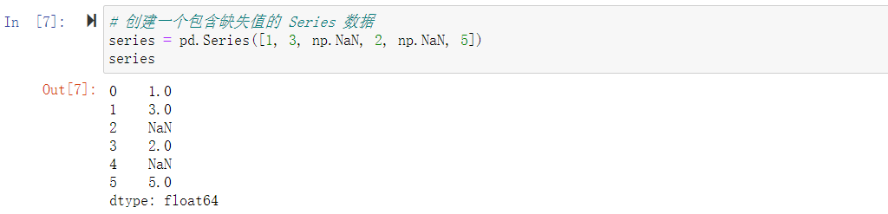
# 判断 Series 中的元素是否为 NaN 值
series.isnull()
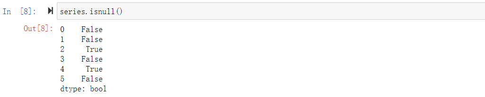
# 计算 Series 中 NaN 值的数量
series.isnull().sum()
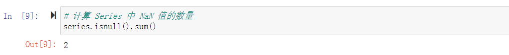
判断 DataFrame 中的数据是否是缺失值：
| 方法 | 说明 |
|---|---|
df.isnull() |
判断 DataFrame 中的每个元素是否为缺失值，返回一个 bool 序列的 DataFrame 数据 |
# 创建一个包含缺失值的 DataFrame 数据
df = pd.DataFrame([
[1, np.NaN, 3],
[np.NaN, 2, 1],
[np.NaN, 3, np.NaN]
], columns=['A', 'B', 'C'])
df
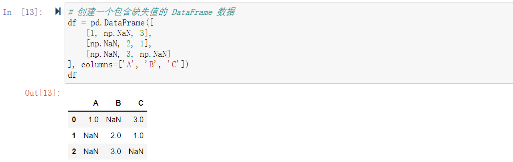
# 判断 DataFrame 中的每个元素是否为缺失值
df.isnull()

# 计算 DataFrame 中每一列的缺失值数量
df.isnull().sum()
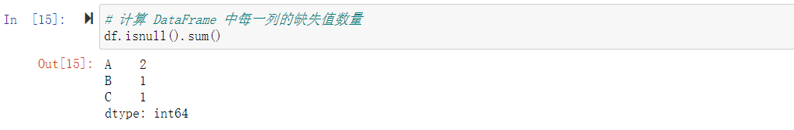
2. 加载包含缺失值的数据
缺失值从何而来呢？缺失值的来源有两个：
1）原始数据包含缺失值
2）数据整理过程中产生缺失值
加载包含缺失值的数据：
1）使用 pandas 加载 survey_visited.csv 数据
# 加载包含缺失值的数据
pd.read_csv('./data/survey_visited.csv')
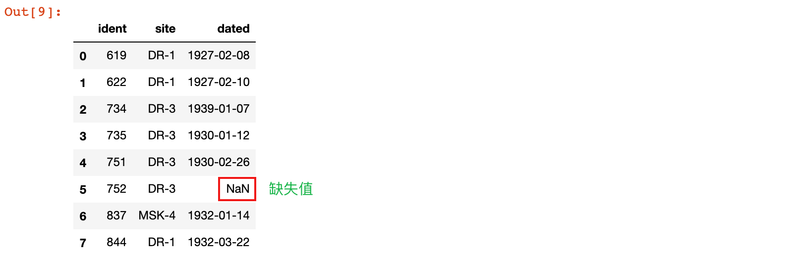
2）pandas 加载数据时，可以设置keep_default_na=False参数，不显示默认缺失值
# 加载数据时，不显示默认的缺失值，默认缺失值填充为''
pd.read_csv('./data/survey_visited.csv', keep_default_na=False)
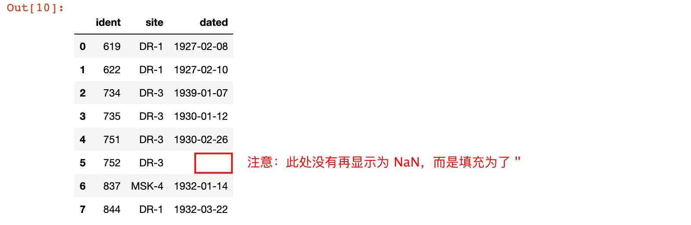
3）pandas 加载数据时，也可以设置 na_values 参数，指定加载数据时把什么当做缺失值
# na_values=["DR-3"]：加载数据时，把 'DR-3' 当做缺失值
pd.read_csv('./data/survey_visited.csv', na_values=["DR-3"], keep_default_na=False)
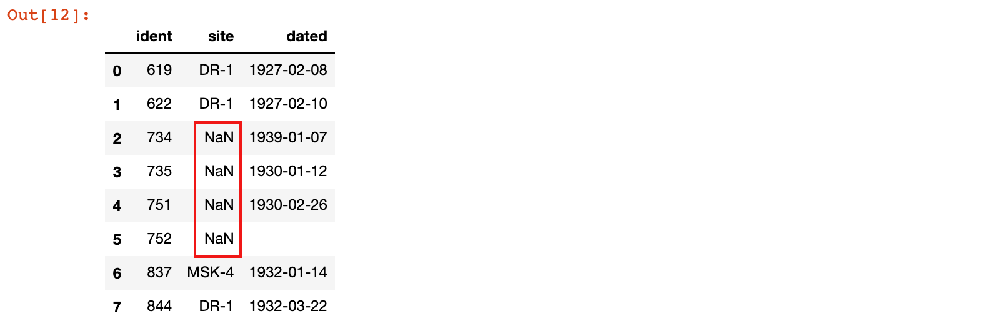
注意：在做数据合并的时候，比如
merge、join等操作时，也可能会产生缺失值，参数用法一致，这里不再赘述
3. 缺失值处理
3.1 加载数据并查看缺失情况
注：本案例使用泰坦尼克生存预测数据
titanic_train.csv，其中Survived字段，代表该名乘客是否获救
3.1.1 加载数据集
1）加载 titanic_train.csv 数据集
# 加载数据
train = pd.read_csv('./data/titanic_train.csv')
pirnt(train.shape)
train.head()
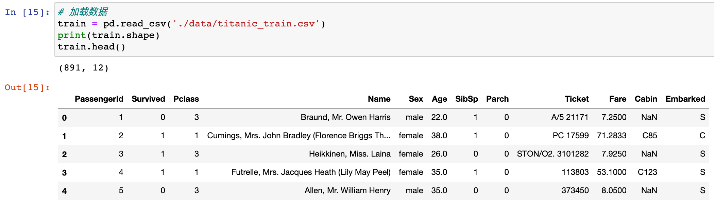
字段介绍：
| 字段名 | 说明 |
|---|---|
PassengerId |
乘客的ID |
Survived |
乘客是否获救，0：没获救，1：已获救 |
Pclass |
乘客船舱等级（1/2/3三个等级舱位） |
Name |
乘客姓名 |
Sex |
性别 |
Age |
年龄 |
SibSp |
乘客在船上的兄弟姐妹/配偶数量 |
Parch |
乘客在船上的父母/孩子数量 |
Ticket |
船票号 |
Fare |
船票价 |
Cabin |
客舱号码 |
Embarked |
登船的港口 |
3.1.2 构造缺失值统计的函数
def missing_values_table(df):
# 计算所有的缺失值
mis_val = df.isnull().sum()
# 计算缺失值的比例
mis_val_percent = 100 * mis_val / len(df)
# 将结果拼接成 DataFrame
mis_val_table = pd.concat([mis_val, mis_val_percent], axis=1)
# 将列重命名
mis_val_table.columns = ['缺失值', '占比(%)']
# 将缺失值为0的列去除，并按照缺失值占比进行排序
mis_val_table_sorted = mis_val_table[mis_val_table['缺失值']!=0].sort_values(
'占比(%)', ascending=False)
# 打印信息
print(f'传入的数据集共{df.shape[1]}列，\n其中{mis_val_table_sorted.shape[0]}列有缺失值')
return mis_val_table_sorted
3.1.3 查看数据集中的缺失值情况
# 查看缺失值情况
missing_values_table(train)
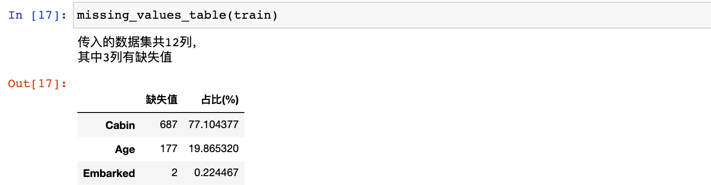
3.2 使用Missingno库对缺失值的情况进行可视化探查
我们可以使用 Missingno 库来对缺失值进行可视化
3.2.1 安装 missingno 并初步查看
1）完全关闭jupyter notebook
2）重新打开anaconda提供的终端中，通过pip安装missingno
# pip安装missingno
pip install missingno
3）安装成功后重新打开jupyter notebook，并运行全部代码
3.2.2 缺失值数量可视化
1）导包并利用missingno.bar(df)函数查看数据集数据完整性
import missingno as msno
msno.bar(train)
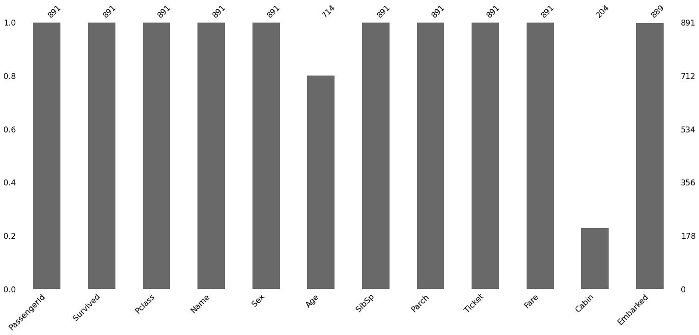
结果说明：
- 图的下测是列名，可以看到"年龄"、"客舱号码"和"登船的港口"列包含值缺失
- 左侧数值为百分比，右侧数值为具体数字，上方数字位非缺失值的数量
3.2.3 缺失值位置的可视化
missingno.matrix 函数 提供了快速直观的查看缺失值的分布情况：
# 查看缺失值分布
msno.matrix(train)
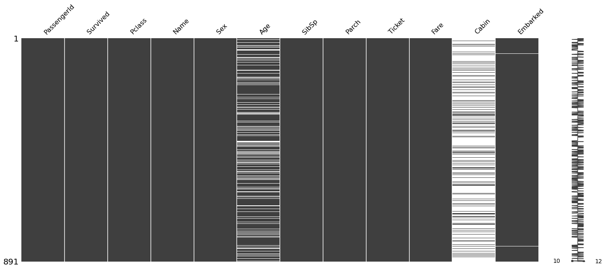
结果说明：
- 在有缺失值的地方，图都显示为空白。 例如在"Embarked"列中，只有两个丢失数据的实例，因此有两个白线。
- 右侧的迷你图给出了数据完整性的情况，并在底部指出了最少有10列数据是完整的，最多有12列数据是完整的
对数据集进行随机取样后再查看数据缺失情况：
# 随机从 train 数据中取出 100 条数据，查看缺失值分布情况
msno.matrix(train.sample(100))
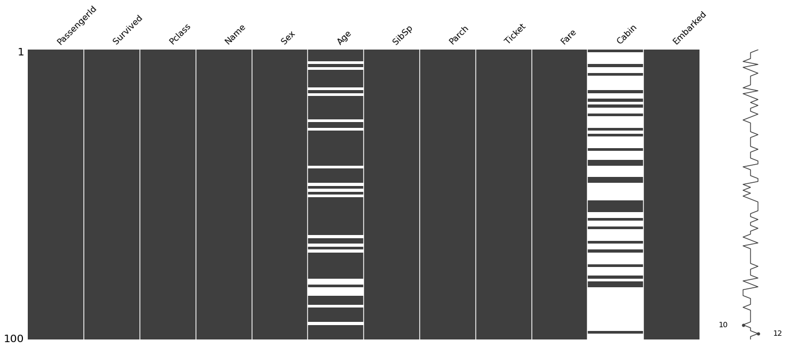
3.2.4 缺失值之间相关性
1）查看缺失值之间是否具有相关性：
# 热力图
msno.heatmap(train)
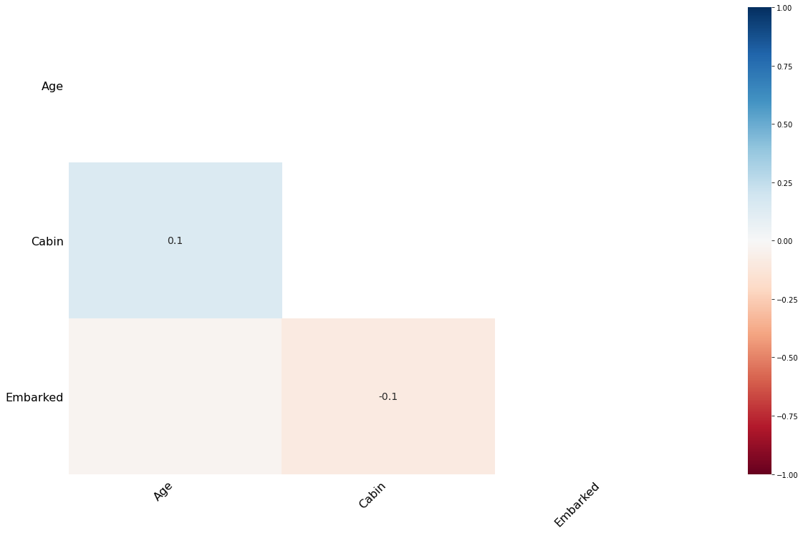
结果说明：
相关性取值 0 不相关，1强相关，-1强负相关
通过上图发现，age 和 cabin的相关性为0.1，所以相关性不强，也就是说，age是否缺失，与Cabin是否缺失没多大关系
2）进一步按age进行排序，再图形化展示缺失值情况，以验证age的缺失与cabin确实无关
_sorted = train.sort_values('Age')
msno.matrix(_sorted)

3.3 缺失值处理
3.3.1 缺失值处理方式概述
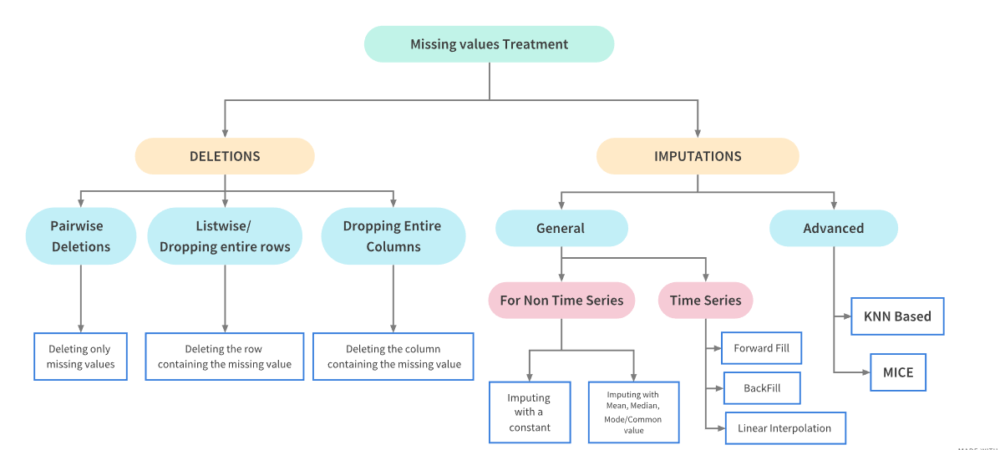
3.3.2 删除缺失值
删除缺失值：删除缺失值会损失信息，并不推荐删除，当缺失数据占比较低的时候，可以尝试使用删除缺失值
1）按行删除：删除指定列为缺失值的行记录
# 复制一份数据
train_cp = train.copy()
# 对Age列进行处理，空值就删除整行数据
train_cp.dropna(subset=['Age'], how='any', inplace=True)
# 输出Age列缺失值的总数
print(train_cp['Age'].isnull().sum())
# 图形化缺失值情况
msno.matrix(train_cp)
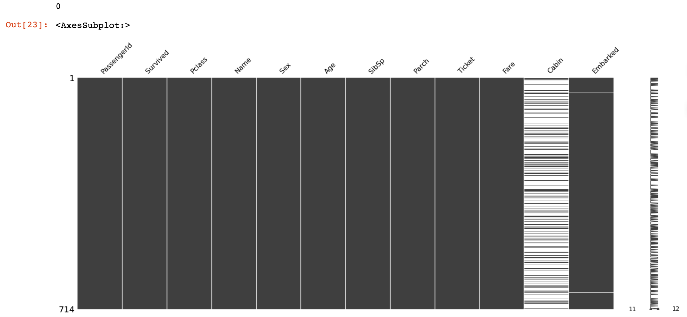
补充内容：dropna的参数
df.dropna(axis=0, how='any', thresh=None, subset=None, inplace=False)
参数说明：
- 可选参数subset：不与thresh参数一起使用：接收一个列表，列表中的元素为列名: 对特定的列进行缺失值删除处理
- 可选参数thresh：参数为int类型，按行去除NaN值，去除NaN值后该行剩余数值的数量（列数）大于等于n，便保留这一行
- 可选参数axis：默认为0，设置为 0 或 'index' 表示按行删除，设置为 1 或 'columns' 表示按列删除
- 可选参数how：默认为'any'，表示如果存在NA值，则删除该行或列，设置为'all'，表示所有值都是NA，则删除该行或列
- 可选参数inplace：表示是否修改变原始的数据集，默认为False，可以设置为True
2）按列删除：当一列包含了很多缺失值的时候（比如超过80%），可以使用df.drop(['列名',..], axis=1)函数将指定列删除，但最好不要删除数据
# 复制一份数据
train_cp = train.copy()
# 对Age列进行处理，空值就删除整行数据
train_cp.drop(['Age'], axis=1, inplace=True)
# 图形化缺失值情况
msno.matrix(train_cp)
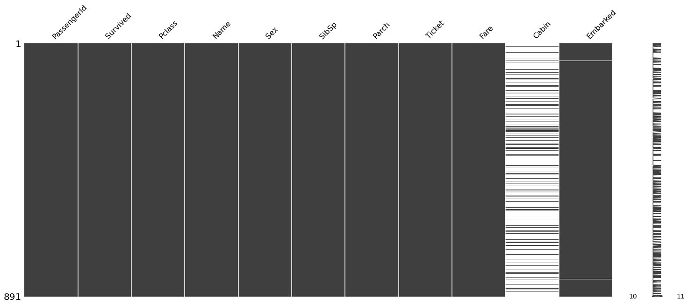
注意：Age 列没有了!!!
3.3.3 非时序数据填充缺失值
填充缺失值（非时间序列数据）：填充缺失值是指用一个估算的值来去替代缺失值
1）使用常量来替换（默认值）
# 复制一份数据
train_constant = train.copy()
# 计算各列空值总数
print('填充缺失值之前：')
print(train_constant.isnull().sum())
# 将空值都填为0，inplace=True为必要参数
train_constant.fillna(0, inplace=True)
# 计算各列空值总数
print('填充缺失值之后：')
print(train_constant.isnull().sum())
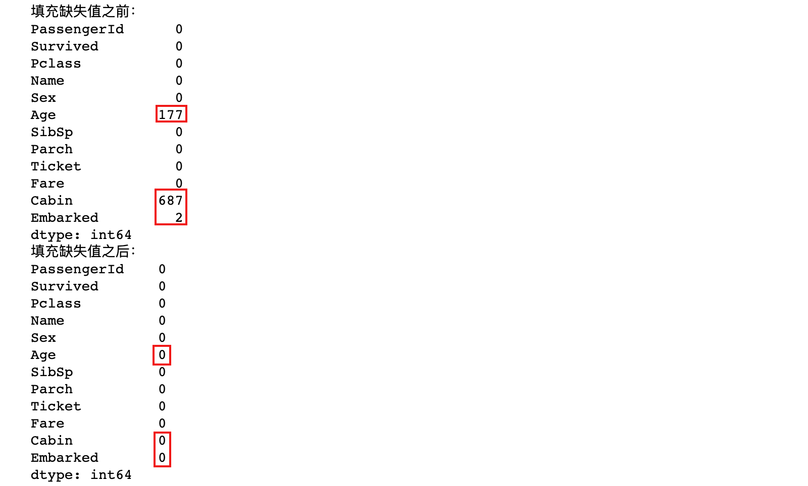
2）使用统计量替换（缺失值所处列的平均值、中位数、众数）
# 复制一份数据
train_mean = train.copy()
# 计算年龄的平均值
age_mean = train_mean['Age'].mean()
print(age_mean)
# 使用年龄的平均值填充 Age 列的缺失值
train_mean['Age'].fillna(age_mean, inplace=True)
train_mean.isnull().sum()
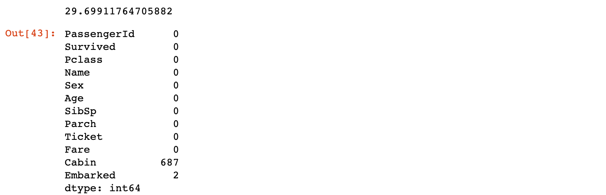
3.3.4 时序数据缺失值处理
时序数据在某一列值的变化往往有一定线性规律，绝大多数的时序数据，具体的列值随着时间的变化而变化，所以对于有时序的行数据缺失值处理有三种方式：
- 用时间序列中空值的上一个非空值填充
- 用时间序列中空值的下一个非空值填充
- 线性插值方法
1）加载样例时序数据集 city_day.csv，该数据集为印度城市空气质量数据（2015-2020）
city_day = pd.read_csv('./data/city_day.csv', parse_dates=True, index_col='Date')
# 复制一份数据
city_day_cp = city_day.copy()
# 查看数据的前 5 行
city_day_cp.head()
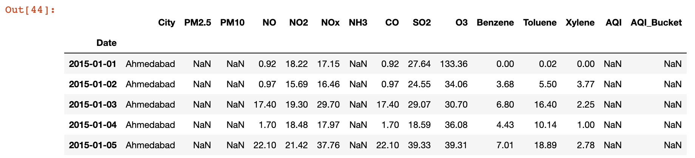
2）用之前封装的方法（本章3.2.2小节），查看数据缺失情况：
city_day_missing = missing_values_table(city_day_cp)
city_day_missing
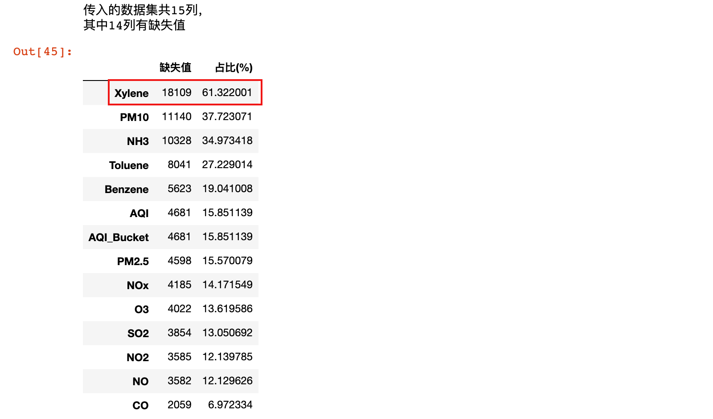
结果说明：
- 我们可以观察到数据中有很多缺失值，比如Xylene有超过60%的缺失值（二甲苯），PM10 有超过30%的缺失值
3）使用fillna函数中的ffill参数，用时间序列中空值的上一个非空值填充
# 截取一小部分数据用于填充效果查看
city_day['Xylene'][50:64]
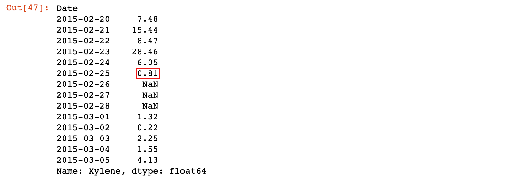
# 填充缺失值
city_day.fillna(method='ffill', inplace=True)
# 截取一小部分数据查看填充效果
city_day['Xylene'][50:64]
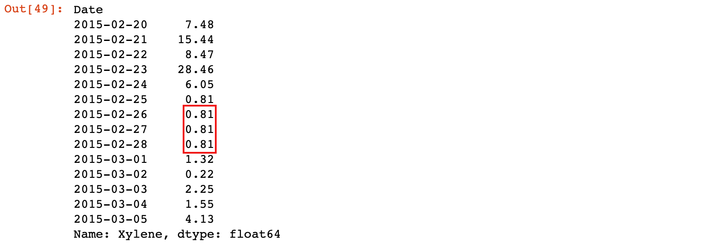
4）上面填充了缺失值之后，再次查看缺失值情况
# 查看缺失值比例
missing_values_table(city_day)
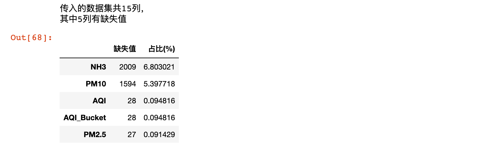
5）使用fillna函数中的bfill参数，用时间序列中空值的下一个非空值填充
# 截取一小部分数据用于填充效果查看
city_day['AQI'][20:30]
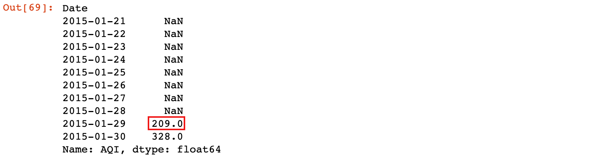
# 填充缺失值
city_day.fillna(method='bfill', inplace=True)
# 截取一小部分数据查看填充效果
city_day['AQI'][20:30]
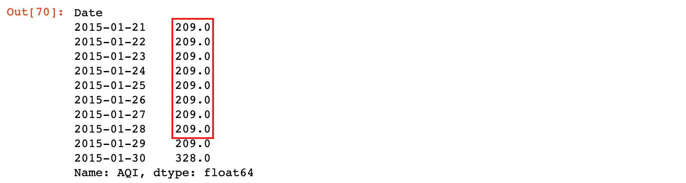
6）上面填充了缺失值之后，再次查看缺失值情况
# 查看缺失值比例
missing_values_table(city_day)
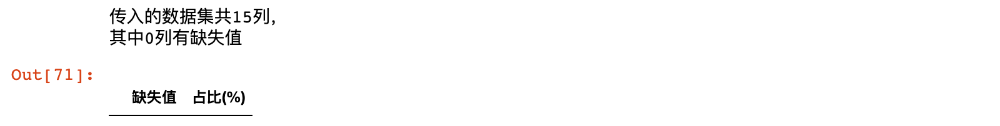
7）使用df.interpolate(limit_direction="both", inplace=True) 对缺失数据进行线性填充
- 绝大多数的时序数据，具体的列值随着时间的变化而变化。 因此，使用bfill和ffill进行插补并不是解决缺失值问题的最优方案。
- 线性插值法是一种插补缺失值技术，它假定数据点之间存在严格的线性关系，并利用相邻数据点中的非缺失值来计算缺失数据点的值
# 截取一小部分数据用于填充效果查看
city_day_cp['Xylene'][50:65]

# 线性插值填充
city_day_cp.interpolate(limit_direction='both', inplace=True)
# 截取一小部分数据用于查看填充效果
city_day_cp['Xylene'][50:65]
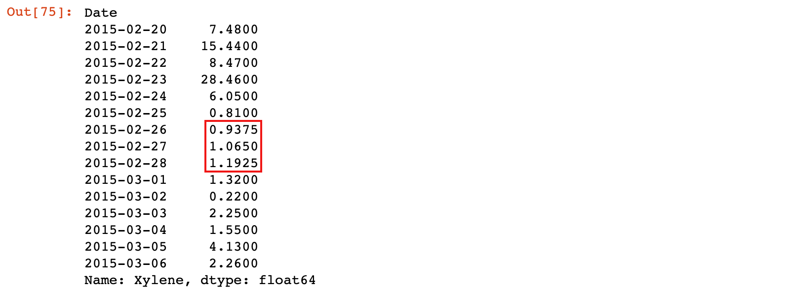
3.3.5 其它填充缺失值的方法
上面介绍的线性填充缺失值的方法，其本质就是机器学习算法预测；当然还有其他机器学习算法可以用来做缺失值的计算，绝大多数场景只需要我们掌握上述缺失值填充的办法即可；一旦无法用上述办法来解决问题，那么将交由算法工程师来解决
总结
- 数据中包含缺失值是很常见的情况，缺失值可能在很多环节产生（用户没填，程序错误，数据合并...)
- pandas中用np.NaN 表示缺失值，通过pd.isnull()或者pd.notnull()来判断是否是缺失值
- 常用的缺失值处理方式
- 删除缺失值
- 按行删除
- 按列删除
- 填充缺失值
- 默认值填充
- 统计值填充
- 用前、后值填充
- 线性插值填充
- 删除缺失值